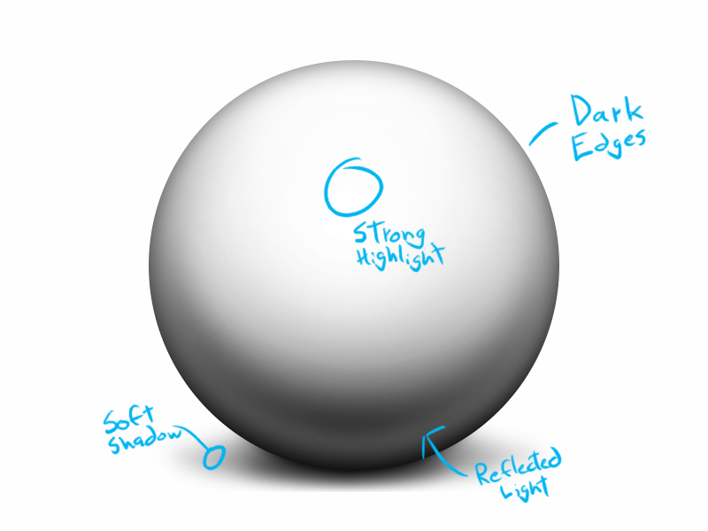

One of the topics I am most interested in, and about which there has been very little written, is the topic of how to light objects in icons. Apple's own Human Interface Guidelines offers only this bit of advice:
...the perceived light source should also be tilted slightly from the perpendicular, but in the opposite direction (that is, towards the top edge of the object) so that a subtle shadow appears at its bottom edge.
...which isn't even entirely correct. Many designers, then, end up going off of what "looks right", and developing a strong instinct for where to put the highlights, the shadows, the gloss and gradients and shaded edges, without ever gaining a complete understanding of why they are doing so. It is my intention here to explain the exact lighting setup used in icons, why we use this setup, and how you can adapt it to suit your designs.
The Setup
Here is a picture of the icon lighting setup when applied to a simple, white, plastic sphere. Some things become immediately apparent:
- Where the object curves away at the edges and reflects the background, the color darkens.
- Where the object reflects the ground, there is a small bit of reflected light.
- The highlight is large, strong, and roughly circular. It is horizontally centered with the canvas and vertically positioned above center.
- The shadow is extremely soft and cast slightly behind the object.
Now, if this lighting setup is correct, we should see the same characteristics in the lighting of other icons as well. Here's one of my own icons, you can see quite clearly that the same lighting setup is in effect.
Here's another example, this time from Apple's own stock:
So, we are definitely seeing the same highlights and shadows over and over. Based on what we observe about light sources in these icons, we can reconstruct the environment these objects are being placed in. This is important, because icons are always shown with a transparent background–we don't know where the light source is, or what the ground looks like, because it isn't visible. This is a rough sketch of the setup for the sphere, showing the placement of the camera, light source, and backdrop, extrapolated from what we have observed about the shading in icons.
To be sure that it works, I mocked up this setup in Blender and rendered a soft sphere. Here's the result.
This setup is pretty close to what we want to use for icons. But it isn't perfect. You'll notice one large difference between the drawn and rendered spheres: the reflected lighting at the bottom. In the version I drew, the sphere reflects darker at the edges everywhere, including the bottom. In the rendered version, the sphere is reflecting light at the bottom edges, and not getting darker. The reason the object reflects darker at all edges in the "icon" version is related to the origin of the entire setup: backgrounds.
The Origin
Unlike other forms of illustration like web graphics, painting, or 3D renders, an iconist has no control over the background on which their icons are displayed. Icons will be placed on a solid black background in Cover Flow, a white background in the Finder and App Stores, and any number of different, user-defined colors in the Dock, Desktop, and other places.
With a painting, you know the colors surrounding an object, so when you have objects that reflect the background [like our sphere] you know exactly which color the edges should be. With an icon, you have no idea. And that is why you have to cheat. You have to find a method of shading that makes icons appear visible against all backgrounds, but also not too out of place on any of them.
The way to do this is by taking the realistic setup we saw before, and then modifying it slightly by darkening the object at the edges. By making an object reflect dark at all edges, we achieve our goals, with one compromise:
- The icon looks realistic on a solid black background, because it is reflecting black at all edges.
- The icon stands out against a black background, because most of the surface is brightly lit by the light source.
- The icon stands out against a white background, because of the dark edges.
- The compromise is that even on a white background, icons will be reflecting dark at the edges, which is unrealistic. In many cases, the shadow solves this, like in the case of the Safari icon below. The shadow is strong enough that the metal's dark reflection at the edges looks realistic even on a white background, because the icon is reflecting the shadow.

Once you get into the habit of keeping this setup in mind when designing icons, the lighting process should be much less daunting, and the results improved. Icons made using the correct lighting setup will look good on all backgrounds, and can be extremely stylized and photorealistic while still fitting in with the system set and the works of other designers.
Adapting
Now, this setup isn't everything. So long as you can keep the four conditions of it present in your icons, though, you have a fair bit of creative freedom with the rest. Let's look at some icons that use sharp metal reflections, for example:
The detailed, layered reflections in both of these icons aren't defined by the aforementioned lighting setup. I, the artist, just made up whatever I thought looked good. As long as you are operating within the basic rules, you have a lot of freedom with regards to reflections and lighting.
If you can get the basics right, the details are up to you. Good luck.